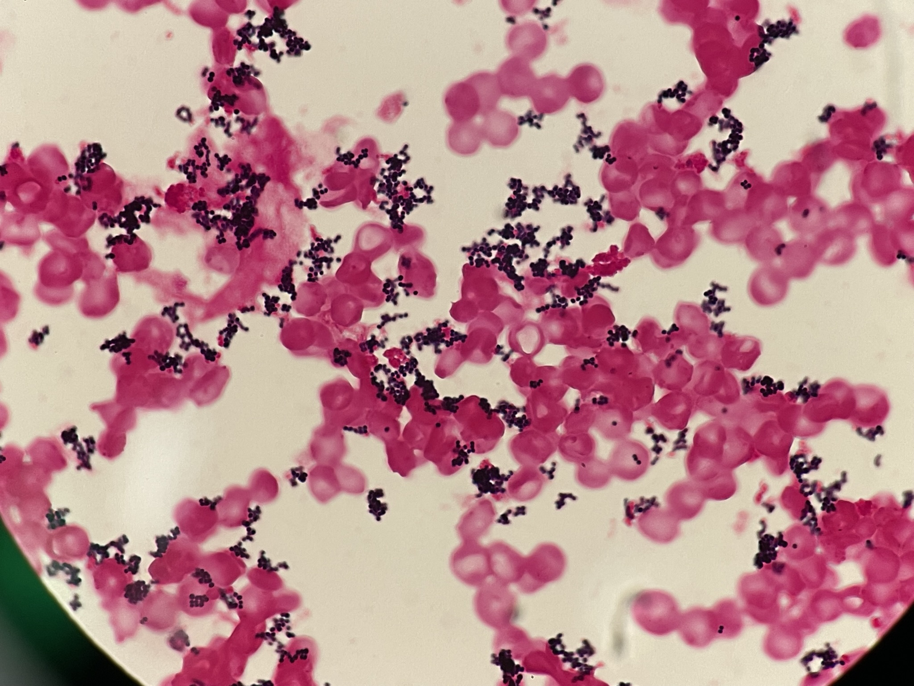
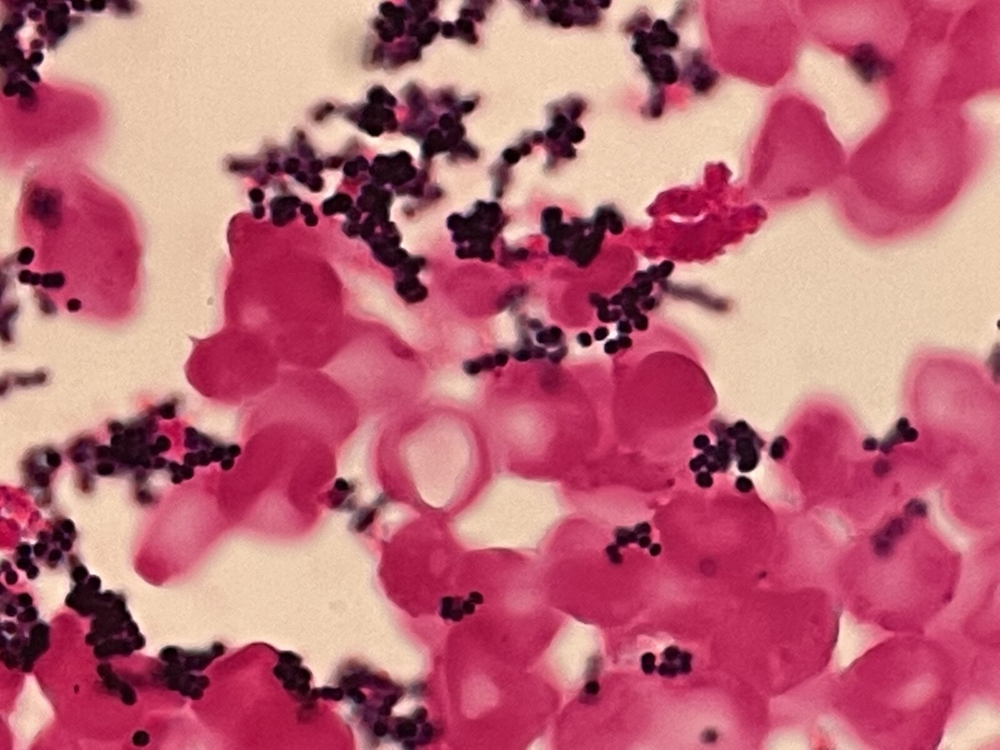

グラム染色 像 撮影：ICU関谷


分類・特徴
皮膚や粘膜バリアを突破すると重篤な感染症を引き起こす常在菌。MSSA／MRSA でβ-ラクタム系への感受性が異なり、治療方針が分かれる[1]。
主な感染症
ひとことメモ
- 血培は好気ボトルの方が陽性になりやすい
関連リンク
出典
- Tong SYC, Fowler VG, Skalla L, Holland TL. Management of Staphylococcus aureus Bacteremia. JAMA 2025;334(9):798-808.
- Larkin EA, Carman RJ, Krakauer T, Stiles BG. Staphylococcus aureus: The Toxic Presence of a Pathogen Extraordinaire. Curr Med Chem 2009;16(30):4003-19.
- Tong SY, Davis JS, Eichenberger E, Holland TL, Fowler VG. Staphylococcus aureus Infections: Epidemiology, Pathophysiology, Clinical Manifestations, and Management. Clin Microbiol Rev 2015;28(3):603-61.
- Cheung GYC, Bae JS, Otto M. Pathogenicity and Virulence of Staphylococcus aureus. Virulence 2021;12(1):547-569.
- Lowy FD. Staphylococcus aureus Infections. NEJM 1998;339(8):520-32.
- DeLeo FR, Otto M, Kreiswirth BN, Chambers HF. Community-Associated Meticillin-Resistant Staphylococcus aureus. Lancet 2010;375(9725):1557-68.
- Chang J, Tasellari A, Wagner JL, Scheetz MH. Contemporary Pharmacologic Treatments of MRSA for Hospitalized Adults. Expert Rev Anti Infect Ther 2023;21(12):1309-1325.
- Rodvold KA, McConeghy KW. Methicillin-Resistant Staphylococcus aureus Therapy: Past, Present, and Future. Clin Infect Dis 2014;58 Suppl 1:S20-7.
- Anstead GM, Cadena J, Javeri H. Treatment of Infections Due to Resistant Staphylococcus aureus. Methods Mol Biol 2014;1085:259-309.
- Raff AB, Kroshinsky D. Cellulitis: A Review. JAMA 2016;316(3):325-37.
- FDA Orange Book.